ATOMS-V1 detail
VoynichLab
A new way to see the Voynich Manuscript.
VoynichLab decomposes the manuscript into thousands of hand-labeled visual components, then uses them to uncover recurring structures, test representations, and build machine-readable evidence from the ink itself.
See how the manuscript becomes data
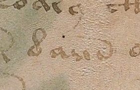
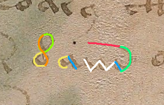
e:1c:1h:2
−
e:1f:1
−
k:1f:1
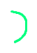
i:1d:1ATOMS-V1
What if the glyphs are not the smallest units?
ATOMS-V1 looks beneath the familiar glyphs and maps the recurring visual components they are made of. Rather than assigning sounds or meanings, it records how complex forms can be decomposed into a consistent set of labeled parts.
Grammar families
The same structures return — with only a few pieces allowed to change.
Across different folios, recurring ATOMS sequences preserve the same surrounding structure while varying only at specific positions.
Family 01
21 cases
optional c:1 / e:1e:1g:1e:1c:1f:1j:1
A compact frame that repeatedly returns with rare inserted material around the left side of the structure.
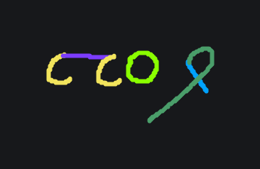
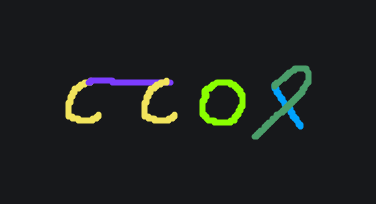
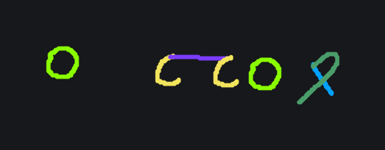
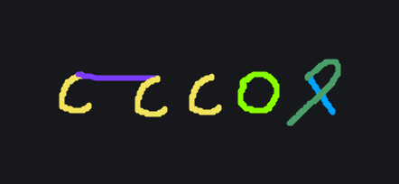
Family 02
15 cases
n:1e:1g:1e:1optional c:1 / e:1
The same four-part frame appears alone and with a constrained extension at the end.
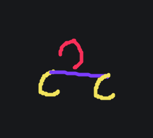
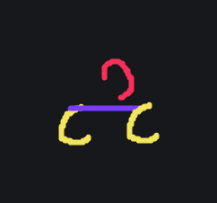
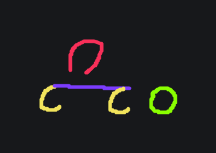
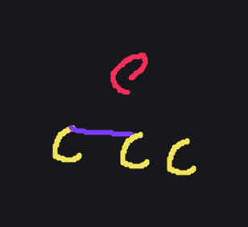
Family 03
14 cases
optional n:1 / c:1e:1g:1e:1e:1h:1
A recurring terminal frame where the left edge admits only a small set of observed additions.
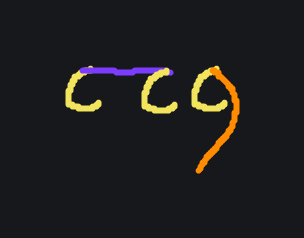
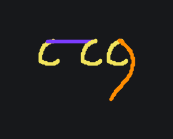
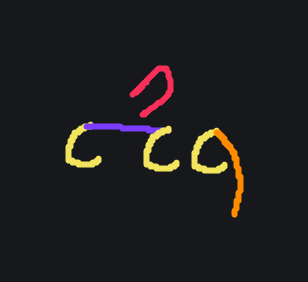
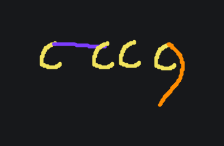
Strong local constraints
examples
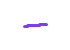
g:1 → e:1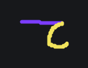
k:1
→
f:1
b:1
→
c:1
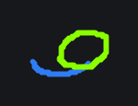
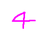
m:1 → c:1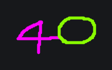
Some neighboring components repeatedly appear in the same order across the corpus.
What is being tested
One manuscript. Two ways of
seeing its structure.
Physical stroke labels
The manuscript is decomposed into recurring, hand-labeled visual components, preserving structure beneath the conventional glyph level.
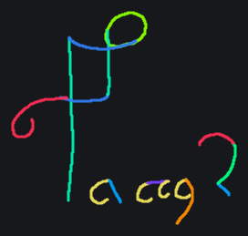
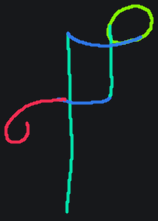
particle 1 particle 4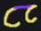
particle 5 particle 3 particle 2Which representation preserves more transferable structure?
Learn from known folios
Freeze the rules
Test on unseen folios
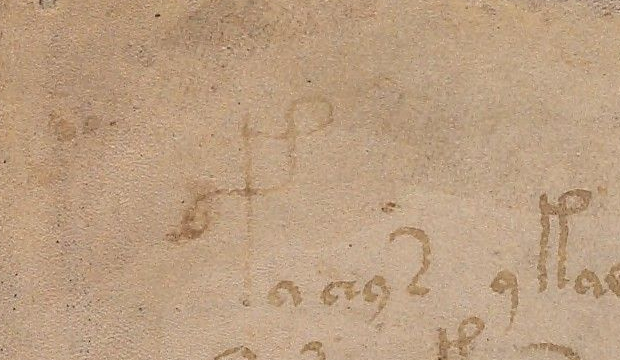
Standard transcription baseline
The conventional Voynich transcription provides a standard reference for testing the same matched manuscript regions.
fachys
EVA transcription
f
a
c
h
y
s
A useful representation should continue predicting structure beyond the pages it learned from.
Corpus V2 · current frozen release
The same six pages, reviewed a second time.
Corpus V1 was our first structured map of the manuscript. Corpus V2 revisits that map, corrects documented annotation mistakes, and asks whether the original result still holds.
What is a corpus?
For this project, a corpus is the research dataset built from manuscript images: labeled strokes, the particles they form, their order on the page, and the sequences used in experiments.
01Annotation audit
First, we checked the human decisions.
ATOMS labels are drawn by hand. That makes visual judgment essential—and human error possible.
What QC means here
Quality control (QC) is the visual review of an annotation against the original manuscript image. Reviewers confirm the decision or record a correction.
We searched for unusual cases.
Our Atlas is an audit tool that groups repeated ATOMS patterns and highlights rare exceptions that may deserve review.
We traced each exception back to the molecule.
Each rare pattern was opened inside its labeled molecule so we could inspect the atoms, particles, and assigned order together.
We separated real variation from labeling error.
Some unusual structures were valid. Others revealed human mistakes in how the molecule had been labeled.
82
QC decisions reviewed
Each decision is preserved in the audit record, including confirmations and corrections.
02Replayed results
Then, we ran the same comparison again.
The audit found real human labeling errors. After correcting them, the shared V1–V2 pages became slightly more regular, and the main ATOMS result remained intact.
How to read this chart
Positional entropy measures how much units move between structural roles. A shorter bar means a more regular, predictable pattern.
ATOMS-V10.5409
physical stroke units
EVA0.7688
conventional transcription units
−0.2279
The audit slightly reduced noise in the matched V1–V2 pages. Across the complete six-folio Corpus V2, ATOMS showed lower positional entropy than EVA.
V2 studies six photographed sides of the manuscript: the front and back of its first two leaves, the front of the third, and the back of leaf 47. Researchers identify these pages as f1r, f1v, f2r, f2v, f3r, and f47v.
On those pages, we compared 639 complete forms segmented from the ink with 660 units recorded by EVA, the conventional written transcription of the Voynich text.
We hid the label of each stroke and compared its shape with previously labeled examples. Its five closest visual matches then voted on which ATOMS category it belonged to.
The vote recovered the human-assigned category in 97.85% of cases. This suggests that the labels usually correspond to visibly repeatable shapes—not arbitrary names.
We tested each photographed manuscript side separately, comparing the stroke-based ATOMS representation with the conventional EVA transcription.
On every one of the six pages, ATOMS placed its units in more consistent structural positions. The result was not caused by one unusually strong page.
Evidence browser
Claims are only as strong as their evidence.
A research claim is a statement backed by a named experiment, a frozen corpus, and inspectable evidence. These nine cases show both the evidence and the limits behind the current public record.
Public research record
Select a case
Experiments
Held-out comparisons, null controls, and ablations.
Experiment
Research timeline
The research, as it actually happened.
Every freeze, experiment, correction, replication, and unexpected result - preserved in public.
From evidence to research
Every research claim must earn its place.
VoynichLab separates observation, evidence, interpretation, and open questions. Nothing becomes a research claim simply because a model produced an interesting result.
Ready to claim
What the experiments directly show
Only results supported by a named experiment, a frozen corpus, and inspectable artifacts become research claims.
Supported interpretation
What those results may suggest
Structural interpretations are presented as hypotheses supported by evidence. Their scope never exceeds the experiments that produced them.
Still open
What requires new evidence
Generalization, independent annotation, larger corpora, and linguistic meaning remain future research—not current conclusions.
Living research record
The research remains public while it is being built. Each component can evolve without changing evidence that has already been published.
Claims
Research claims
Research roadmap
Research system
No program produces a conclusion by itself.
Each stage begins with a scientific question. The software may change; the question and the evidence required to answer it remain.
Starting pointInk on the manuscript page
01Observe
Which strokes belong together?
The page remains visible while a human traces the physical ink and groups it into atoms, particles, and molecules.
02Audit
Real pattern or annotation error?
Repeated shapes are grouped, rare exceptions are surfaced, and proposed corrections are reviewed before a new corpus is published.
03Test
Does the structure survive a new page?
ATOMS is compared with EVA, structural rules are frozen, and predictions are tested on manuscript regions excluded from training.
Only after all three stagesEvidence ready to support a research claim
The life of evidence
Evidence is earned, not generated.
VoynichLab records the full research process, but it gives each stage a different status. Work becomes public evidence only after it has been reviewed, documented, and explicitly frozen.
The repository contract
Local tools create candidate evidence.→Git preserves selected evidence.→The portal makes it inspectable.
Read the governance model
WorkingReviewedFrozenPublic
Created, corrected, explored
Where work begins
Annotation databases, manuscript images, temporary exports, and exploratory runs live beside the tools that create them.
Compared, audited, challenged
Where candidate results are challenged
Lab scripts turn selected data into measurements, controls, anomaly reviews, and candidate results. At this stage, they are still under examination.
Named, documented, preserved
Where evidence acquires an identity
A promoted result receives a stable experiment ID, methodology, provenance, metrics, tables, and checksums that bind the bundle together.
Registered, connected, explained
Where evidence becomes inspectable
The research registry connects each public claim to its experiment, artifacts, limitations, release history, and portal explanation.
Releases
Public anchors: commits, tags, and checkpoints.
Reproducibility
Maintainer replay commands, not clean-clone certification.
Current boundary: public artifacts and the tagged prospective release can be verified today. The current Corpus V2 analysis can be replayed in the maintainer environment. The full repository has not yet been certified as a clean-clone reproduction package.
cd GrammarDiscoveryLab
npm.cmd run validate
npm.cmd run null-control:v1
npm.cmd run null-control:v2
npm.cmd run null-control:v3
npm.cmd run null-control:v3:diagnostics
npm.cmd run representation-alignment:v1
npm.cmd run representation-comparison:v2-regions
npm.cmd run representation-comparison:v3-ablations
npm.cmd run prospective-atoms-eva:verify-release
cd ../EVAComparisonLab
npm.cmd run corpus:v2